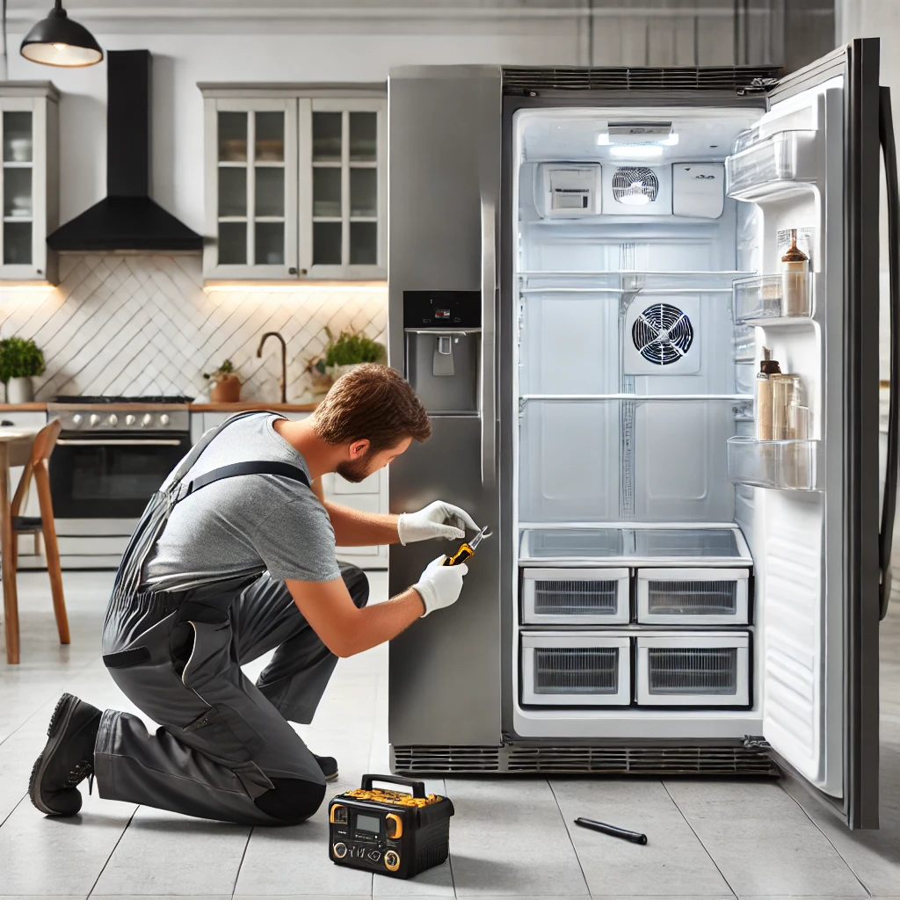

Top 5 Signs Your Refrigerator Needs Repair
Refrigerators are essential appliances in our homes, and it's crucial to keep them in good working condition. Here are the top 5 signs that indicate your refrigerator needs repair:
1. Strange Noises
If your refrigerator is making unusual noises such as banging, buzzing, or humming, it could be a sign of a mechanical problem. These noises often indicate issues with the compressor or other internal components.
2. Excessive Frost Build-Up
While a small amount of frost is normal in freezers, excessive frost build-up can signal a problem with the defrost system. This can lead to inefficient cooling and increased energy consumption.
3. Leaking Water
Water leaks around your refrigerator can be caused by a blocked defrost drain or a faulty water supply line. Ignoring this issue can lead to water damage in your home.
4. Inconsistent Temperatures
If your refrigerator struggles to maintain a consistent temperature, food spoilage can occur. This issue may be due to a malfunctioning thermostat, dirty condenser coils, or other cooling system problems.
5. High Energy Bills
A refrigerator that is not operating efficiently can cause a noticeable increase in your energy bills. This is often a sign that the appliance is working harder than necessary to maintain the desired temperature.
It's important to address these issues promptly to prevent further damage and ensure your refrigerator continues to function properly. If you notice any of these signs, consider contacting a professional appliance repair service.